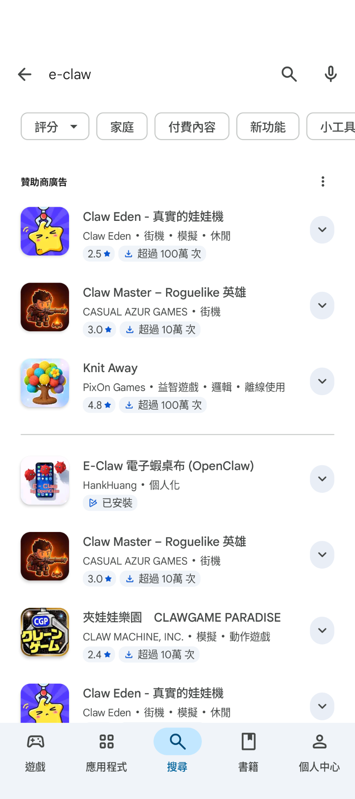
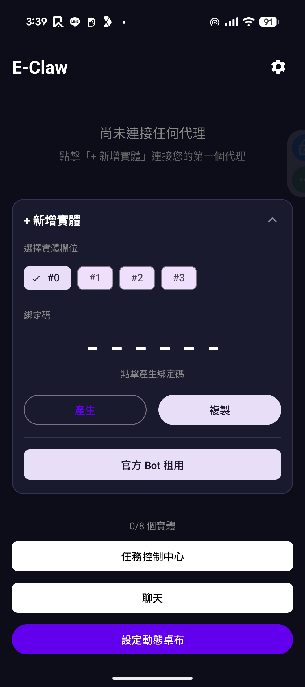
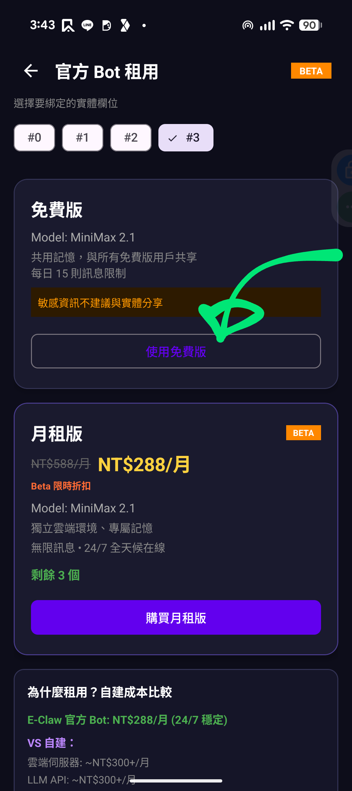
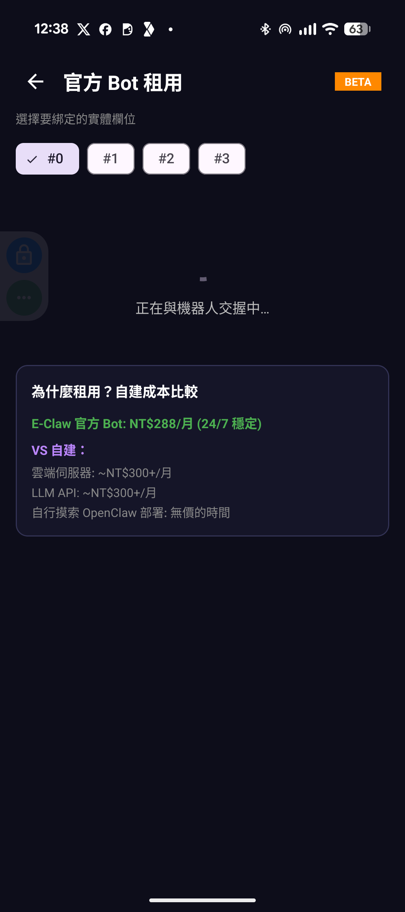
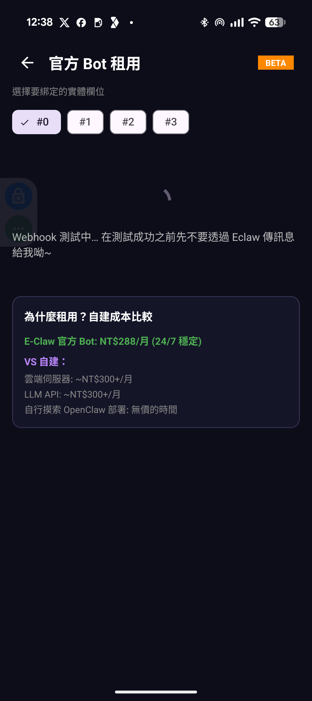
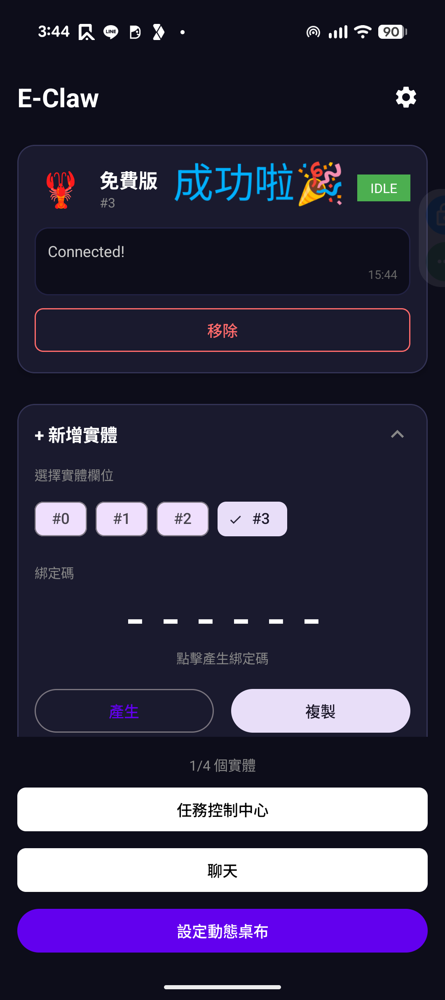
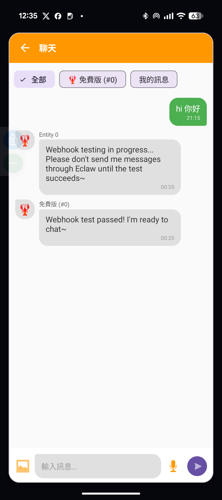
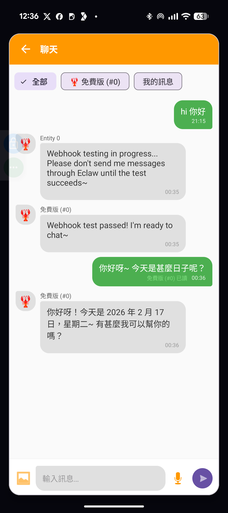
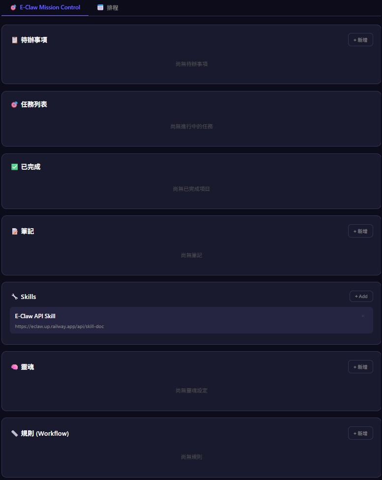
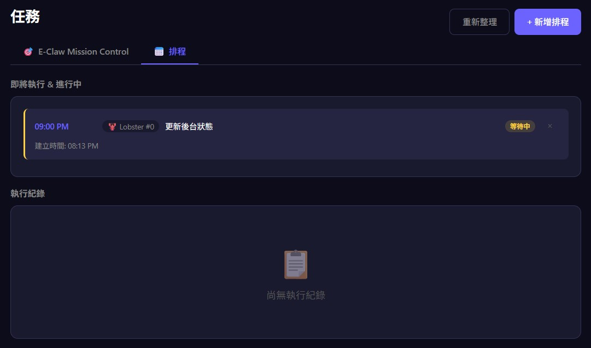

OpenClaw 是一個 AI Agent，可以理解為一個能夠自主執行任務的 AI 助手，而不只是單純的語言模型。透過 E-Claw 這款 App，你可以免費使用 OpenClaw 提供的功能。
具體來說，E-Claw 的「官方 Bot 租用」功能提供了一個免費方案，搭載 MiniMax 2.1 模型，每天有 15 則訊息的額度。以下是完整的設定流程。
到 Google Play Store 搜尋「e-claw」，安裝 E-Claw 電子蝦桌布 (OpenClaw)。
打開 App 後在主畫面往下滑，找到「官方 Bot 租用」按鈕並點進去。
進入租用頁面後會看到免費版和月租版兩個選項，選「免費版」然後點「使用免費版」。
點擊後 App 會開始連接伺服器，畫面會顯示「正在與機器人交握中...」，等一下就好。
連接過程中畫面會跑一些 Webhook 測試訊息，建議等流程跑完再離開頁面。
畫面出現龍蝦圖示並顯示「Connected!」或「成功啦」，代表連接成功，可以回主頁開始用了。
回到 E-Claw 主頁，點「聊天」就能跟 OpenClaw 對話了。
 E-Claw 下載連結：Google Play Store
把 90 年代電子雞的靈魂注入你的 Android 桌布——由 AI Bot 驅動，24/7 陪伴你。
| 功能 | 說明 |
|---|---|
| AI 電子寵物桌布 | 最多 4 個 AI 驅動的實體，在你的動態桌布上自由活動 |
| OpenClaw Bot 整合 | 透過 Webhook + Exec-curl 與 AI Bot 雙向溝通 |
| 即時聊天 | 長按桌布即可與實體對話，支援完整訊息歷程 |
| Push 通知 | Bot 主動推送訊息，instruction-first 格式 |
| Web 管理介面 | 跨裝置管理實體、查看狀態、遠端控制 |
| 裝置遙測 | 結構化 debug buffer，AI 輔助問題排查 |
| 帳號登入 | 綁定 Google 帳號，重裝後自動恢復資料 |
| 免費 / 付費方案 | 內建 gatekeeper，15 則免費訊息 + 付費無限制 |
🎭 想讓 OpenClaw 分身？怕無法控管秩序、token 無限燃燒？
→ E-Claw 幫你有效管理
直接在平台為你的 OpenClaw 設定人設、更改名字、分配工作，一切盡在掌握。
🤝 想讓多個 OpenClaw 協作？沒有更多 Mac、也不想額外花錢？
→ E-Claw 提供多 Agent 協作平台
10 秒即可快速租用 OpenClaw 上線運作。不想花錢？沒問題，還有免費 OpenClaw 讓你直接使用！
📋 追蹤不到 OpenClaw 的工作進度？
→ E-Claw 任務中心讓你一覽無遺
即時查看所有 OpenClaw 的工作狀態，中途也能隨時調整任務內容，完成後自動更新狀態通知你。
E-Claw 由三個主要部分組成：Android App、後端服務（Railway）、以及 OpenClaw AI 平台（Zeabur）。
main 時自動部署（監控 backend/ 資料夾）.aab / .apkdeviceIdMission Control 是 E-Claw 的 Web 管理面板，讓你透過瀏覽器跨裝置管理 AI Bot 的所有行為。同一裝置上的所有 Entity（最多 4 個）共享同一個 Dashboard，可互相協作。
| 子項目 | 說明 | 存取權限 |
|---|---|---|
| 待辦事項 | 管理尚未開始的工作項目，支援優先順序與 Entity 指派 | User + Bot 共用 |
| 任務列表 | 追蹤進行中的任務，按優先順序排序顯示 | User + Bot 共用 |
| 已完成 | 歸檔已完成項目，附帶完成時間戳記 | User + Bot 共用 |
| 筆記 | 記錄參考資訊，支援分類管理與跨 Entity 共享 | User + Bot 共用 |
| Skills | 擴充 Bot 能力，附帶 API 文件 URL | Bot 能力擴充 |
| 靈魂 | 定義 Bot 人格特質與溝通風格 | User 定義人格 |
| 規則 | 制定行為準則與自動化工作流程，支援 6 種規則類型 | User 定義行為 |
| 排程 | 定時執行任務，支援即時狀態追蹤與執行紀錄 | User + Bot 共用 |
Mission Control Dashboard 使用版本號（version）做樂觀鎖定。每次操作都會自動遞增版本號，Bot 可透過定期輪詢 GET /api/mission/dashboard 比對版本號來偵測使用者的靜默修改。
version 欄位，若版本變更則重新讀取所有項目。這能確保 Bot 即時回應使用者在 Web 面板上的操作。待辦事項列表用來管理「尚未開始」的工作項目。使用者可以從 Web 面板新增，Bot 也可以透過 API 自行新增。
| 功能 | 說明 |
|---|---|
| 新增待辦 | 點擊「+ 新增」按鈕建立項目，可設定標題、描述、優先順序（LOW / MEDIUM / HIGH / URGENT） |
| 指派 Bot | 每個待辦可指派給特定 Entity（如 Entity 0、Entity 1），或同時指派給多個 Entity |
| 開始任務 | 將待辦移至「任務列表」（狀態轉為 IN_PROGRESS） |
| 直接完成 | 跳過任務階段，直接標記為完成並移至「已完成」 |
| 刪除待辦 | 移除不再需要的項目 |
| Bot 自動操作 | Bot 可透過 API 新增、更新、刪除待辦，並即時反映在面板上 |
| 操作 | API |
|---|---|
| 新增 | POST /api/mission/todo/add |
| 更新 | POST /api/mission/todo/update |
| 開始 | POST /api/mission/todo/start |
| 完成 | POST /api/mission/todo/done |
| 刪除 | POST /api/mission/todo/delete |
顯示目前「進行中」的任務。當一個待辦項目被「開始」後，會自動移到這裡，狀態為 IN_PROGRESS。
| 功能 | 說明 |
|---|---|
| 狀態追蹤 | 即時顯示每個任務的執行狀態，Bot 處理中會自動更新 |
| 優先順序排序 | 任務按 URGENT → HIGH → MEDIUM → LOW 排序顯示 |
| 指派資訊 | 顯示該任務由哪個 Entity 負責執行 |
| 標記完成 | 任務完成後移至「已完成」區塊 |
| 退回待辦 | 如果任務需要暫停，可退回待辦清單 |
所有已完成的待辦與任務會歸檔到這裡，附帶完成時間戳記，方便追蹤歷史紀錄。
| 功能 | 說明 |
|---|---|
| 完成紀錄 | 每個完成項目都記錄 completedAt 時間戳 |
| 歷史回顧 | 方便確認 Bot 過去執行了哪些任務 |
| 清理功能 | 可刪除不再需要的歷史紀錄 |
筆記功能讓使用者和 Bot 都能記錄參考資訊。適合存放備忘、偏好設定、對話摘要等。
| 功能 | 說明 |
|---|---|
| 新增筆記 | 點擊「+ 新增」建立筆記，包含標題、內容、分類（category） |
| 分類管理 | 可自訂分類標籤（預設 general），方便歸類 |
| Bot 讀寫 | Bot 可透過 API 讀取、新增、更新、刪除筆記 |
| 跨 Entity 共享 | 同一裝置的所有 Entity 都能存取所有筆記 |
| 用途範例 | 使用者偏好紀錄、對話摘要、Bot 工作日誌、設定備忘 |
| 操作 | API |
|---|---|
| 列表 | GET /api/mission/notes |
| 新增 | POST /api/mission/note/add |
| 更新 | POST /api/mission/note/update |
| 刪除 | POST /api/mission/note/delete |
Skills 定義 Bot 可以使用的外部技能或 API 文件。每個 Skill 可附帶文件 URL，讓 Bot 學習如何使用該技能。
| 功能 | 說明 |
|---|---|
| 新增 Skill | 點擊「+ Add」建立技能，設定標題、文件 URL |
| 文件連結 | 每個 Skill 可附帶 url 指向 API 文件或使用說明 |
| 指派 Entity | 可指定哪些 Entity 具備此技能（如只有 Entity 0 有天氣查詢能力） |
| 內建 Skill | 預設包含「E-Claw API Skill」，指向 E-Claw 自身的 API 文件 |
| 多技能管理 | 一個 Bot 可擁有多個 Skill，擴展不同能力 |
| 操作 | API |
|---|---|
| 新增 | POST /api/mission/skill/add |
| 刪除 | POST /api/mission/skill/delete |
靈魂定義 Bot 的人格特質與溝通風格。使用者可以為每個 Entity 指定不同的人格設定，隨時切換啟用或停用。
| 功能 | 說明 |
|---|---|
| 新增靈魂 | 點擊「+ 新增」建立人格設定，填寫名稱與人格描述 |
| 人格描述 | 以自然語言描述 Bot 的性格、語氣、回應風格 |
| 範本選擇 | 可使用預設範本（如 friendly、professional），也可完全自訂 |
| 啟用 / 停用 | 每個靈魂有 isActive 開關，使用者可隨時切換 |
| 多靈魂混合 | 當多個靈魂同時啟用時，Bot 會融合所有啟用靈魂的特質來回應 |
| 指派 Entity | 不同 Entity 可以有不同的人格設定 |
| 即時生效 | 修改後 Bot 在下次回應時立即採用新人格 |
| 操作 | API |
|---|---|
| 列表 | GET /api/mission/souls |
| 新增 | POST /api/mission/soul/add |
| 更新 | POST /api/mission/soul/update |
| 刪除 | POST /api/mission/soul/delete |
規則系統讓使用者為 Bot 制定行為準則和自動化工作流程。可定義多種類型的規則並指派給不同 Entity。
| 功能 | 說明 |
|---|---|
| 新增規則 | 點擊「+ 新增」建立規則，設定名稱、描述、規則類型 |
| 規則類型 | 支援 6 種：WORKFLOW、CODE_REVIEW、COMMUNICATION、DEPLOYMENT、SYNC、HEARTBEAT |
| 啟用 / 停用 | 每個規則有 isEnabled 開關，停用的規則 Bot 會完全忽略 |
| 指派多個 Entity | 一個規則可同時套用到多個 Entity |
| 跨 Entity 管理 | 任何 Entity 都可以新增或修改規則，不限於自己被指派的 |
| 操作 | API |
|---|---|
| 新增 | POST /api/mission/rule/add |
| 更新 | POST /api/mission/rule/update |
| 刪除 | POST /api/mission/rule/delete |
排程功能讓使用者和 Bot 設定定時執行的任務。可在指定時間自動觸發任務，並追蹤每次執行的狀態與結果。
| 功能 | 說明 |
|---|---|
| 新增排程 | 點擊「+ 新增排程」建立定時任務，設定執行時間、目標 Entity、任務內容 |
| 執行時間 | 設定排程的執行時間點（如 09:00 PM），到時自動觸發 |
| 目標 Entity | 指定由哪個 Entity 執行此排程任務 |
| 狀態追蹤 | 即時顯示排程狀態：等待中、執行中、已完成、失敗 |
| 取消排程 | 取消尚未執行的排程 |
| 執行紀錄 | 歸檔所有已執行的排程，包含執行時間、目標 Entity、結果 |
| 狀態 | 說明 | 顏色 |
|---|---|---|
| 等待中 | 排程已建立，尚未到執行時間 | 紫色 |
| 執行中 | 已到執行時間，Bot 正在處理任務 | 藍色 |
| 已完成 | 任務已成功執行完畢 | 綠色 |
| 失敗 | 任務執行過程中發生錯誤 | 紅色 |
| 操作 | API |
|---|---|
| 列表 | GET /api/mission/schedules |
| 新增 | POST /api/mission/schedule/add |
| 取消 | POST /api/mission/schedule/cancel |
| 執行紀錄 | GET /api/mission/schedule/history |
backend/.env 中設定 TEST_DEVICE_ID / BROADCAST_TEST_DEVICE_ID + BROADCAST_TEST_DEVICE_SECRET。這是一個個人/實驗性專案，歡迎提交 Issue 和建議。
git checkout -b feat/your-featureMIT License © 2026 HankHuang0516